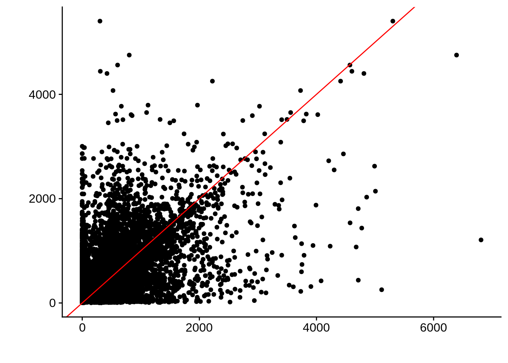
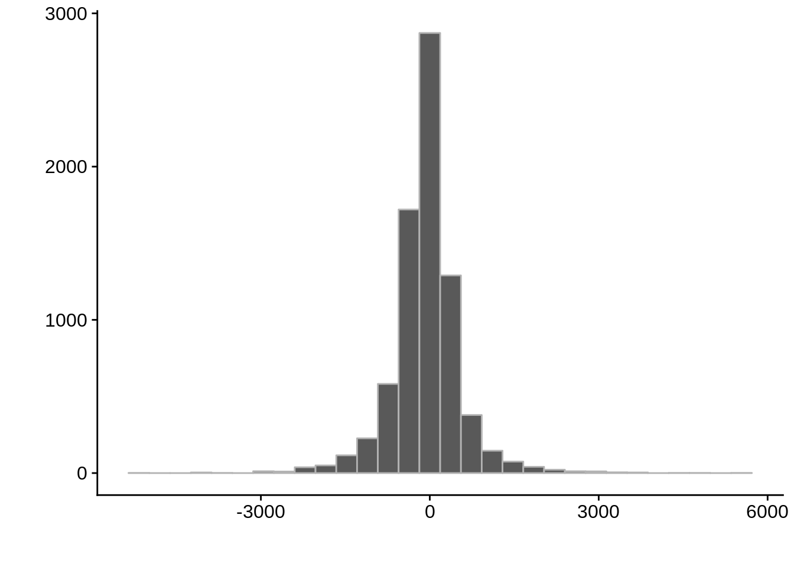
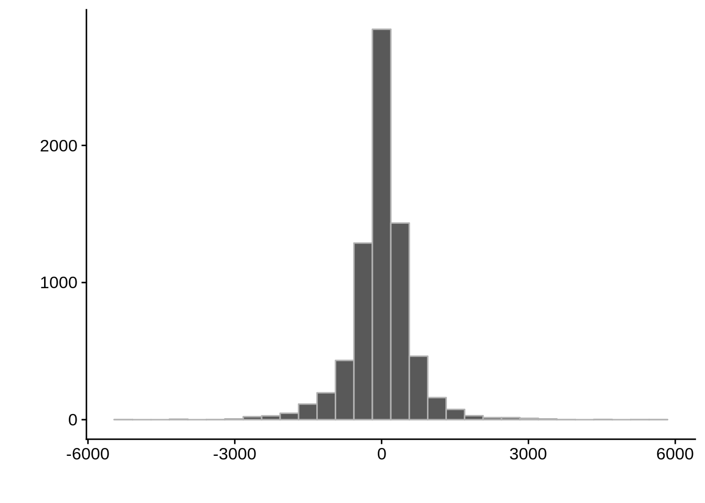
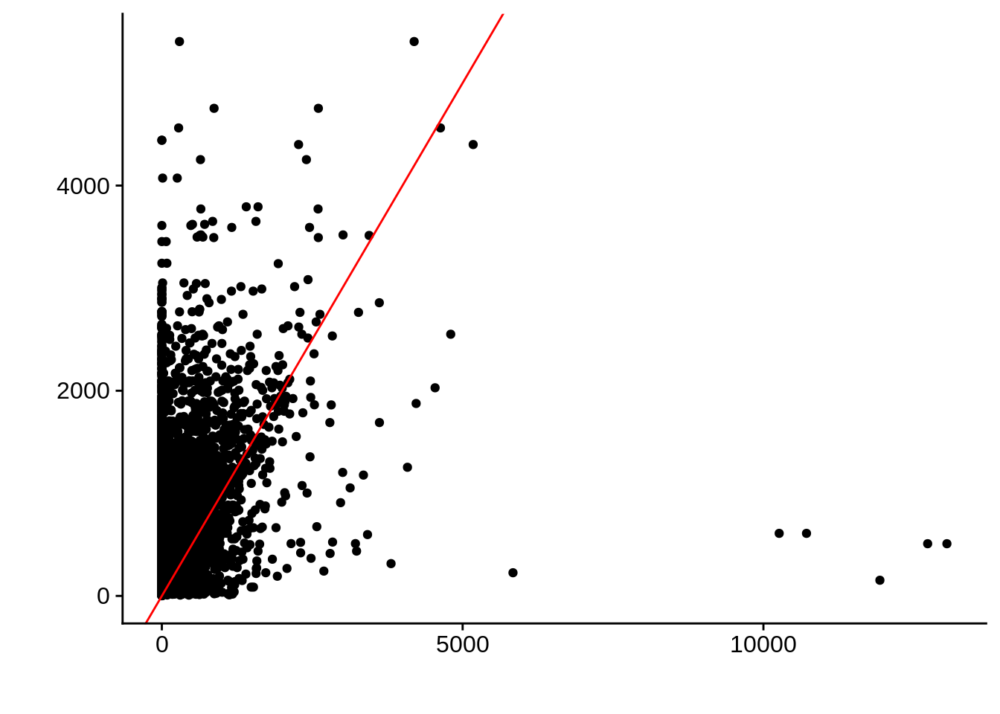
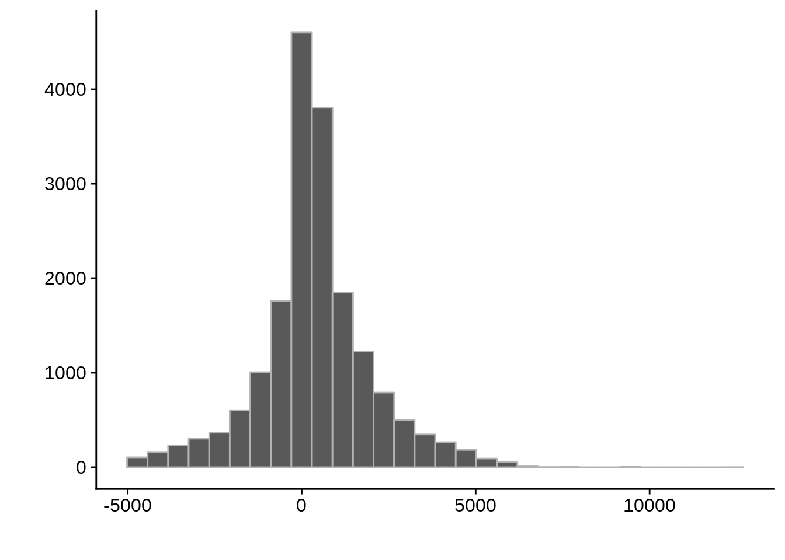
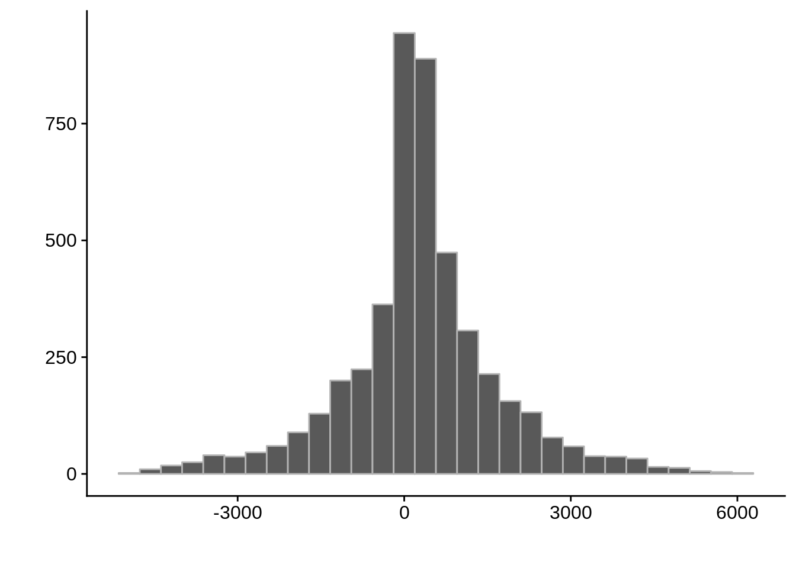
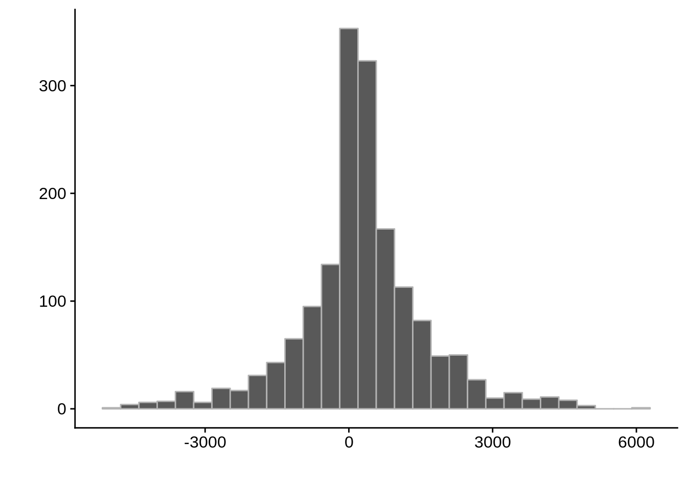
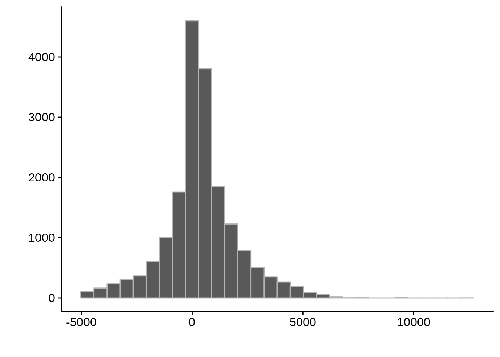
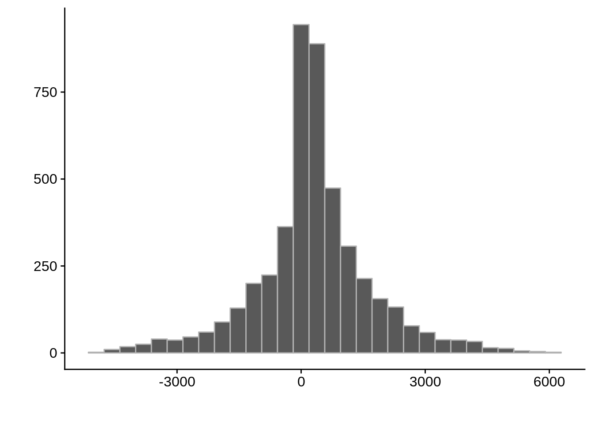
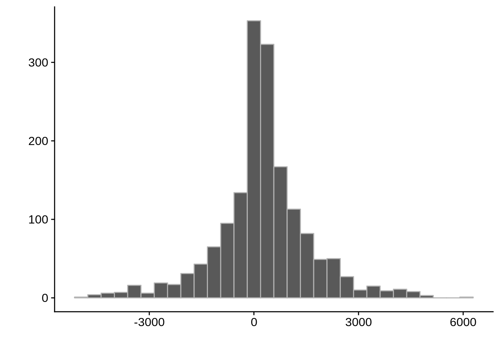

Comparing predicted UTRs
Philipp Ross
2018-09-24
Last updated: 2018-09-25
Code version: c5562e7
Comparing different UTR and TSS predictions
Since we were able to predict both UTRs and TSSs using our data, we wanted to know how our predictions compared to previously published predictions. Here, we compare the UTRs predicted in Caro et al. and Adjalley et al..
What we see is that although there are some large deviations, for the majority of 5UTR and TSS predictions, the results are not very different with a mean hovering around zero base pairs of difference between the start positions of our predicted 5’ UTRs and TSS and those that were previously published.
First, let’s import our 5UTR data:
library(org.Pf.plasmo.db)
aliases <- tibble::as_tibble(data.frame(org.Pf.plasmoALIAS2ORF))
utrs <- tibble::as_tibble(rtracklayer::import.gff("../output/final_utrs/final_5utrs_3d7.gff"))
utrs$Parent <- unlist(utrs$Parent)Comparing to Caro et al.
# Comparing our UTR estimates to the Derisi predictions
derisi1 <- tibble::as_tibble(rtracklayer::import.bed("../data/compare_utrs/GSM1410291_UTRs_1.bed"))
derisi2 <- tibble::as_tibble(rtracklayer::import.bed("../data/compare_utrs/GSM1410292_UTRs_2.bed"))
derisi3 <- tibble::as_tibble(rtracklayer::import.bed("../data/compare_utrs/GSM1410293_UTRs_3.bed"))
derisi4 <- tibble::as_tibble(rtracklayer::import.bed("../data/compare_utrs/GSM1410294_UTRs_4.bed"))
derisi5 <- tibble::as_tibble(rtracklayer::import.bed("../data/compare_utrs/GSM1410295_UTRs_5.bed"))
fix_derisi_utrs <- function(set) {
set$name <- stringi::stri_replace_last(set$name,replacement=" ",regex="_")
set <- set %>% tidyr::separate(name,into = c("gene_id","type"), sep =" ")
set$gene_id <- toupper(set$gene_id)
out <- dplyr::inner_join(set, aliases, by=c("gene_id"="alias_symbol"))
return(out)
}
derisi1 <- fix_derisi_utrs(derisi1)
derisi2 <- fix_derisi_utrs(derisi2)
derisi3 <- fix_derisi_utrs(derisi3)
derisi4 <- fix_derisi_utrs(derisi4)
derisi5 <- fix_derisi_utrs(derisi5)tmp1 <- dplyr::select(derisi1, gene_id.y, width)
tmp2 <- dplyr::select(utrs, Parent, width)
compare_derisi <- dplyr::inner_join(tmp1,tmp2,by=c("gene_id.y"="Parent"))
rm(tmp1,tmp2)
ggplot(compare_derisi,aes(width.x,width.y)) + geom_point() + geom_abline(color="red")

Pearson's product-moment correlation
data: compare_derisi$width.x and compare_derisi$width.y
t = 44.624, df = 7619, p-value < 2.2e-16
alternative hypothesis: true correlation is not equal to 0
95 percent confidence interval:
0.4372115 0.4728149
sample estimates:
cor
0.4551951 tmp1 <- dplyr::select(derisi2, gene_id.y, width)
tmp2 <- dplyr::select(utrs, Parent, width)
compare_derisi <- dplyr::inner_join(tmp1,tmp2,by=c("gene_id.y"="Parent"))
rm(tmp1,tmp2)
ggplot(compare_derisi,aes(width.x,width.y)) + geom_point() + geom_abline(color="red")

Pearson's product-moment correlation
data: compare_derisi$width.x and compare_derisi$width.y
t = 39.839, df = 7926, p-value < 2.2e-16
alternative hypothesis: true correlation is not equal to 0
95 percent confidence interval:
0.3899543 0.4266379
sample estimates:
cor
0.408461 tmp1 <- dplyr::select(derisi3, gene_id.y, width)
tmp2 <- dplyr::select(utrs, Parent, width)
compare_derisi <- dplyr::inner_join(tmp1,tmp2,by=c("gene_id.y"="Parent"))
rm(tmp1,tmp2)
ggplot(compare_derisi,aes(width.x,width.y)) + geom_point() + geom_abline(color="red")
Pearson's product-moment correlation
data: compare_derisi$width.x and compare_derisi$width.y
t = 40.612, df = 7201, p-value < 2.2e-16
alternative hypothesis: true correlation is not equal to 0
95 percent confidence interval:
0.4127160 0.4503005
sample estimates:
cor
0.4316956 tmp1 <- dplyr::select(derisi3, gene_id.y, width)
tmp2 <- dplyr::select(utrs, Parent, width)
compare_derisi <- dplyr::inner_join(tmp1,tmp2,by=c("gene_id.y"="Parent"))
rm(tmp1,tmp2)
ggplot(compare_derisi,aes(width.x,width.y)) + geom_point() + geom_abline(color="red")
Pearson's product-moment correlation
data: compare_derisi$width.x and compare_derisi$width.y
t = 40.612, df = 7201, p-value < 2.2e-16
alternative hypothesis: true correlation is not equal to 0
95 percent confidence interval:
0.4127160 0.4503005
sample estimates:
cor
0.4316956 tmp1 <- dplyr::select(derisi4, gene_id.y, width)
tmp2 <- dplyr::select(utrs, Parent, width)
compare_derisi <- dplyr::inner_join(tmp1,tmp2,by=c("gene_id.y"="Parent"))
rm(tmp1,tmp2)
ggplot(compare_derisi,aes(width.x,width.y)) + geom_point()+ geom_abline(color="red")
Pearson's product-moment correlation
data: compare_derisi$width.x and compare_derisi$width.y
t = 39.132, df = 7197, p-value < 2.2e-16
alternative hypothesis: true correlation is not equal to 0
95 percent confidence interval:
0.3996269 0.4377261
sample estimates:
cor
0.4188608 tmp1 <- dplyr::select(derisi5, gene_id.y, width)
tmp2 <- dplyr::select(utrs, Parent, width)
compare_derisi <- dplyr::inner_join(tmp1,tmp2,by=c("gene_id.y"="Parent"))
rm(tmp1,tmp2)
ggplot(compare_derisi,aes(width.x,width.y)) + geom_point() + geom_abline(color="red")
Pearson's product-moment correlation
data: compare_derisi$width.x and compare_derisi$width.y
t = 29.152, df = 8625, p-value < 2.2e-16
alternative hypothesis: true correlation is not equal to 0
95 percent confidence interval:
0.2801573 0.3185779
sample estimates:
cor
0.299489 Comparing to Adjalley et al.
# Comparing our UTR estimates to the Adjalley predictions
adjalley <- tibble::as_tibble(rtracklayer::import.gff("../data/compare_utrs/sorted_Adjalley_Chabbert_TSSs.gff"))
for (i in 1:8) {
adjalley_filtered <- adjalley %>%
dplyr::mutate(position=(start+end)/2) %>%
dplyr::filter(FilterSize>i)
tmp1 <- dplyr::select(adjalley_filtered, AssignedFeat, position)
tmp2 <- dplyr::select(utrs, Parent, start)
compare_adjalley <- dplyr::inner_join(tmp1,tmp2,by=c("AssignedFeat"="Parent"))
g <- ggplot(compare_adjalley,aes(position-start)) + geom_histogram(fill="#aec6cf",color="grey50")
print(g)
} 

Session Information
R version 3.5.0 (2018-04-23)
Platform: x86_64-pc-linux-gnu (64-bit)
Running under: Gentoo/Linux
Matrix products: default
BLAS: /usr/local/lib64/R/lib/libRblas.so
LAPACK: /usr/local/lib64/R/lib/libRlapack.so
locale:
[1] LC_CTYPE=en_US.UTF-8 LC_NUMERIC=C
[3] LC_TIME=en_US.UTF-8 LC_COLLATE=en_US.UTF-8
[5] LC_MONETARY=en_US.UTF-8 LC_MESSAGES=en_US.UTF-8
[7] LC_PAPER=en_US.UTF-8 LC_NAME=C
[9] LC_ADDRESS=C LC_TELEPHONE=C
[11] LC_MEASUREMENT=en_US.UTF-8 LC_IDENTIFICATION=C
attached base packages:
[1] parallel stats4 stats graphics grDevices utils datasets
[8] methods base
other attached packages:
[1] bindrcpp_0.2.2
[2] BSgenome.Pfalciparum.PlasmoDB.v24_1.0
[3] BSgenome_1.48.0
[4] rtracklayer_1.40.6
[5] Biostrings_2.48.0
[6] XVector_0.20.0
[7] GenomicRanges_1.32.6
[8] GenomeInfoDb_1.16.0
[9] org.Pf.plasmo.db_3.6.0
[10] AnnotationDbi_1.42.1
[11] IRanges_2.14.10
[12] S4Vectors_0.18.3
[13] Biobase_2.40.0
[14] BiocGenerics_0.26.0
[15] scales_1.0.0
[16] cowplot_0.9.3
[17] magrittr_1.5
[18] forcats_0.3.0
[19] stringr_1.3.1
[20] dplyr_0.7.6
[21] purrr_0.2.5
[22] readr_1.1.1
[23] tidyr_0.8.1
[24] tibble_1.4.2
[25] ggplot2_3.0.0
[26] tidyverse_1.2.1
loaded via a namespace (and not attached):
[1] nlme_3.1-137 bitops_1.0-6
[3] matrixStats_0.54.0 lubridate_1.7.4
[5] bit64_0.9-7 httr_1.3.1
[7] rprojroot_1.3-2 tools_3.5.0
[9] backports_1.1.2 R6_2.2.2
[11] DBI_1.0.0 lazyeval_0.2.1
[13] colorspace_1.3-2 withr_2.1.2
[15] tidyselect_0.2.4 bit_1.1-14
[17] compiler_3.5.0 git2r_0.23.0
[19] cli_1.0.0 rvest_0.3.2
[21] xml2_1.2.0 DelayedArray_0.6.5
[23] labeling_0.3 digest_0.6.15
[25] Rsamtools_1.32.3 rmarkdown_1.10
[27] R.utils_2.6.0 pkgconfig_2.0.2
[29] htmltools_0.3.6 rlang_0.2.2
[31] readxl_1.1.0 rstudioapi_0.7
[33] RSQLite_2.1.1 bindr_0.1.1
[35] jsonlite_1.5 BiocParallel_1.14.2
[37] R.oo_1.22.0 RCurl_1.95-4.11
[39] GenomeInfoDbData_1.1.0 Matrix_1.2-14
[41] Rcpp_0.12.18 munsell_0.5.0
[43] R.methodsS3_1.7.1 stringi_1.2.4
[45] yaml_2.2.0 SummarizedExperiment_1.10.1
[47] zlibbioc_1.26.0 plyr_1.8.4
[49] grid_3.5.0 blob_1.1.1
[51] crayon_1.3.4 lattice_0.20-35
[53] haven_1.1.2 hms_0.4.2
[55] knitr_1.20 pillar_1.3.0
[57] XML_3.98-1.16 glue_1.3.0
[59] evaluate_0.11 modelr_0.1.2
[61] cellranger_1.1.0 gtable_0.2.0
[63] assertthat_0.2.0 broom_0.5.0
[65] GenomicAlignments_1.16.0 memoise_1.1.0
[67] workflowr_1.1.1 This R Markdown site was created with workflowr